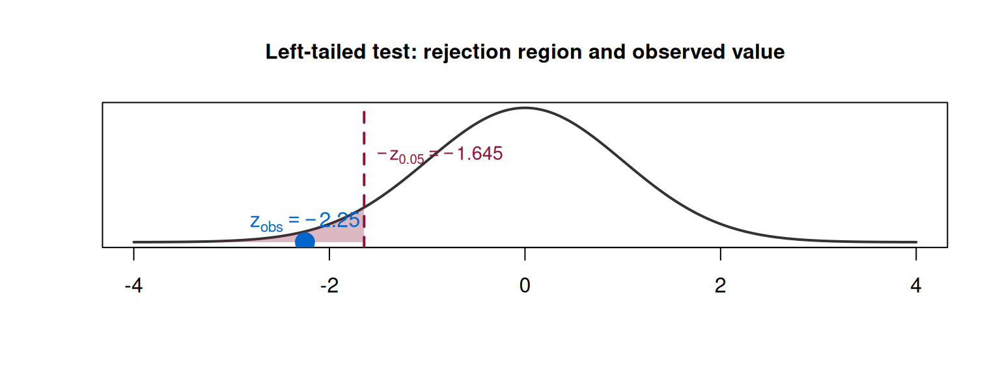
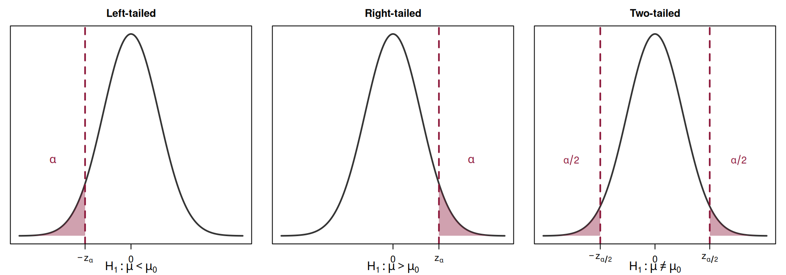
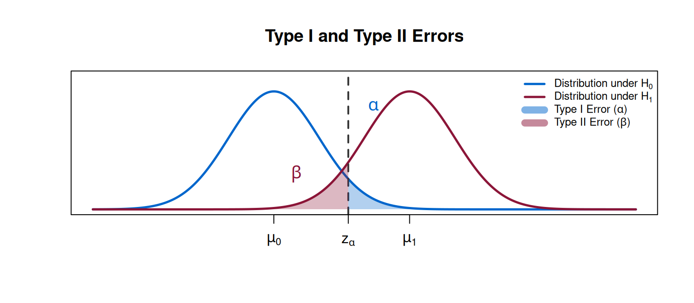

Parametric Hypothesis Tests — Part 1
Basic Concepts, Test Procedure, and Errors
Paulo Fagandini
Lisbon Accounting and Business School – Polytechnic University of Lisbon
2025-04-14
Introduction to Hypothesis Testing
Recall: Statistical Inference
So far in this course, we have covered:
- Sampling distributions (Topic 1): how sample statistics behave
- Point estimation (Topic 2.1): finding a single “best guess” for a parameter
- Interval estimation (Topic 2.2): constructing a range of plausible values
Now we ask a different question:
Given a claim about a population parameter, does the sample data support or contradict that claim?
Why Hypothesis Testing?
In practice, decisions must be made under uncertainty:
- A pharmaceutical company claims a new drug lowers cholesterol by more than 20 mg/dL. Does the clinical trial data support this?
- An engineer suspects that a machine is overfilling packages beyond the nominal 100 g. Is there statistical evidence?
- A bank manager believes the average processing time for loan applications has decreased. Can we confirm this?
Hypothesis testing provides a formal, rigorous framework for answering these questions using sample data.
From Estimation to Testing
The Key Shift
In estimation, we ask: “What is the value of the parameter?”
In hypothesis testing, we ask: “Is the parameter equal to (or greater than, or less than) a specific value?”
We already have the building blocks:
- Sampling distributions
- Pivot (fulcral) variables: \(Z\), \(T\), \(Q\) (\(\chi^2\))
- Critical values from statistical tables
3.1 — Basic Concepts
The Structure of a Hypothesis Test
Every hypothesis test involves the same fundamental elements:
- Null hypothesis (\(H_0\)): the claim we assume to be true until evidence says otherwise
- Alternative hypothesis (\(H_1\)): the claim we are trying to find evidence for
- Test statistic: a function of the sample data (computed under \(H_0\))
- Significance level (\(\alpha\)): the probability of rejecting \(H_0\) when it is actually true
- Critical (rejection) region: the set of values of the test statistic that lead to rejection of \(H_0\)
The Null Hypothesis (\(H_0\))
Null Hypothesis
The null hypothesis, denoted \(H_0\), represents the status quo — the current belief, the manufacturer’s specification, or the default assumption.
It always contains an equality sign (\(=\), \(\leq\), or \(\geq\)).
Examples:
- \(H_0\): \(\mu = 100\) (the mean weight is 100 g)
- \(H_0\): \(\mu \leq 500\) (the mean daily revenue does not exceed 500 €)
- \(H_0\): \(\sigma^2 \geq 10\) (the variance is at least 10)
Important: We never “accept” \(H_0\). We either reject it or fail to reject it.
The Alternative Hypothesis (\(H_1\))
Alternative Hypothesis
The alternative hypothesis, denoted \(H_1\) (or \(H_a\)), represents what we are trying to find evidence for. It is the “research hypothesis.”
It contains a strict inequality (\(\neq\), \(>\), or \(<\)).
The form of \(H_1\) determines the type of test:
| \(H_0\) | \(H_1\) | Type of test |
|---|---|---|
| \(\mu = \mu_0\) | \(\mu \neq \mu_0\) | Two-tailed (bilateral) |
| \(\mu \leq \mu_0\) | \(\mu > \mu_0\) | Right-tailed (unilateral right) |
| \(\mu \geq \mu_0\) | \(\mu < \mu_0\) | Left-tailed (unilateral left) |
How to Formulate \(H_0\) and \(H_1\)
A common source of confusion: which claim goes in \(H_0\) and which in \(H_1\)?
Rule of thumb:
- \(H_0\) is the claim that we assume true unless the data convinces us otherwise
- \(H_1\) is the claim we want to prove (what the researcher suspects)
Think of it as a trial: \(H_0\) is “innocent” (the default), and \(H_1\) is “guilty.” The burden of proof lies on \(H_1\).
Example: Formulating Hypotheses
Scenario: A food company states that each package contains, on average, 500 g of product. A consumer protection agency suspects the company is underfilling.
What are \(H_0\) and \(H_1\)?
- The status quo (company’s claim): \(\mu = 500\) (or \(\mu \geq 500\))
- The suspicion (what we want evidence for): \(\mu < 500\)
\[H_0: \mu \geq 500 \quad \text{vs.} \quad H_1: \mu < 500\]
This is a left-tailed test.
Example: Formulating Hypotheses (cont.)
Scenario: An engineer suspects that a machine is overfilling packages beyond the nominal 100 g.
\[H_0: \mu \leq 100 \quad \text{vs.} \quad H_1: \mu > 100\]
This is a right-tailed test.
Scenario: A quality control inspector wants to check whether the mean weight differs from the specification of 100 g (could be above or below).
\[H_0: \mu = 100 \quad \text{vs.} \quad H_1: \mu \neq 100\]
This is a two-tailed (bilateral) test.
The Test Statistic
Test Statistic
The test statistic is a random variable, computed from the sample, whose distribution is known under \(H_0\).
It measures how far the sample result is from what \(H_0\) predicts.
You already know these from interval estimation:
| Parameter | Conditions | Test Statistic | Distribution under \(H_0\) |
|---|---|---|---|
| \(\mu\) | \(\sigma\) known | \(Z_0 = \frac{\bar{X}-\mu_0}{\sigma/\sqrt{n}}\) | \(N(0,1)\) |
| \(\mu\) | \(\sigma\) unknown | \(T_0 = \frac{\bar{X}-\mu_0}{S'/\sqrt{n}}\) | \(t_{(n-1)}\) |
| \(\sigma^2\) | Normal pop. | \(Q_0 = \frac{(n-1)S'^2}{\sigma_0^2}\) | \(\chi^2_{(n-1)}\) |
The Significance Level (\(\alpha\))
Significance Level
The significance level \(\alpha\) is the maximum probability of rejecting \(H_0\) when \(H_0\) is actually true.
\[\alpha = P(\text{reject } H_0 \mid H_0 \text{ is true})\]
Common values: \(\alpha = 0.01\), \(\alpha = 0.05\), \(\alpha = 0.10\).
- Smaller \(\alpha\) \(\Rightarrow\) harder to reject \(H_0\) \(\Rightarrow\) stronger evidence required
- Larger \(\alpha\) \(\Rightarrow\) easier to reject \(H_0\) \(\Rightarrow\) weaker evidence suffices
\(\alpha\) is chosen before collecting data and performing the test.
The Critical (Rejection) Region
Critical Region
The critical region (or rejection region) is the set of values of the test statistic for which we reject \(H_0\).
Its boundary is determined by the significance level \(\alpha\) and the type of test.
Critical Regions: Visual Summary

The shaded areas represent the rejection region. If the observed test statistic falls in the shaded area, we reject \(H_0\).
The General Test Procedure
Step-by-step procedure for a hypothesis test
- State the hypotheses: write \(H_0\) and \(H_1\)
- Choose the significance level \(\alpha\)
- Identify the test statistic and its distribution under \(H_0\)
- Determine the critical region (using \(\alpha\) and statistical tables)
- Compute the observed value of the test statistic from the sample
- Make the decision: reject \(H_0\) if the observed value falls in the critical region; otherwise, do not reject \(H_0\)
- State the conclusion in the context of the problem
Type I and Type II Errors
Two Types of Mistakes
When we make a decision based on sample data, we can make two kinds of errors:
| \(H_0\) is true | \(H_0\) is false | |
|---|---|---|
| Do not reject \(H_0\) | Correct decision | Type II Error (\(\beta\)) |
| Reject \(H_0\) | Type I Error (\(\alpha\)) | Correct decision |
Type I Error
Type I Error
A Type I error occurs when we reject \(H_0\) even though \(H_0\) is true.
\[\alpha = P(\text{Type I Error}) = P(\text{reject } H_0 \mid H_0 \text{ is true})\]
This is exactly the significance level \(\alpha\).
Analogy: Convicting an innocent person in a trial.
Type II Error
Type II Error
A Type II error occurs when we fail to reject \(H_0\) even though \(H_0\) is false (i.e., \(H_1\) is true).
\[\beta = P(\text{Type II Error}) = P(\text{do not reject } H_0 \mid H_1 \text{ is true})\]
Analogy: Acquitting a guilty person in a trial.
\(\beta\) depends on:
- The true value of the parameter (how far from \(H_0\))
- The sample size \(n\)
- The significance level \(\alpha\)
The Power of a Test
Power
The power of a test is the probability of correctly rejecting \(H_0\) when \(H_1\) is true:
\[\text{Power} = 1 - \beta = P(\text{reject } H_0 \mid H_1 \text{ is true})\]
A good test has high power (close to 1).
In practice:
- Increasing \(n\) increases power (and reduces \(\beta\))
- Increasing \(\alpha\) increases power but also increases the risk of Type I error
- There is always a trade-off between \(\alpha\) and \(\beta\)
The Trade-off Between \(\alpha\) and \(\beta\)
For a fixed sample size \(n\):
- If we decrease \(\alpha\) (more conservative) \(\Rightarrow\) \(\beta\) increases (harder to detect a real effect)
- If we increase \(\alpha\) (more liberal) \(\Rightarrow\) \(\beta\) decreases (easier to detect, but more false alarms)
The only way to reduce both \(\alpha\) and \(\beta\) simultaneously is to increase the sample size \(n\).
Analogy: Fire Alarm
Think of a hypothesis test as a fire alarm:
- Type I Error (\(\alpha\)): The alarm goes off, but there is no fire (false alarm)
- Type II Error (\(\beta\)): There is a fire, but the alarm does not go off (missed detection)
- If we make the alarm very sensitive: fewer missed fires (\(\beta\) small), but more false alarms (\(\alpha\) large)
- If we make the alarm less sensitive: fewer false alarms (\(\alpha\) small), but more missed fires (\(\beta\) large)
Summary: Errors at a Glance

Solved Example — Putting It All Together
Example 1: Test for the Mean (\(\sigma\) known)
A bottling company fills bottles with a nominal volume of \(\mu_0 = 500\) mL. The filling process is known to have a standard deviation of \(\sigma = 8\) mL. A quality inspector takes a random sample of \(n = 36\) bottles and obtains a sample mean of \(\bar{x} = 497\) mL.
At the 5% significance level, is there evidence that the machine is underfilling?
Example 1: Solution — Step 1
Step 1: State the hypotheses.
The inspector suspects underfilling, i.e., the mean is less than 500.
\[H_0: \mu \geq 500 \quad \text{vs.} \quad H_1: \mu < 500\]
This is a left-tailed test.
Example 1: Solution — Step 2
Step 2: Significance level.
\[\alpha = 0.05\]
Example 1: Solution — Step 3
Step 3: Test statistic.
The population standard deviation \(\sigma = 8\) is known, so:
\[Z_0 = \frac{\bar{X} - \mu_0}{\sigma / \sqrt{n}} \underset{\text{under } H_0}{\sim} N(0, 1)\]
Example 1: Solution — Step 4
Step 4: Critical region.
For a left-tailed test at \(\alpha = 0.05\):
\[\text{Rejection region: } \left]-\infty\, ;\, -z_{\alpha}\right] = \left]-\infty\, ;\, -1.645\right]\]
We reject \(H_0\) if \(z_{obs} \leq -1.645\).
Example 1: Solution — Step 5
Step 5: Compute the observed value.
\[z_{obs} = \frac{\bar{x} - \mu_0}{\sigma / \sqrt{n}} = \frac{497 - 500}{8 / \sqrt{36}} = \frac{-3}{8/6} = \frac{-3}{1.333} \approx -2.25\]
Example 1: Solution — Step 6
Step 6: Decision.
\[z_{obs} = -2.25 \leq -1.645\]
The observed value falls in the rejection region.
\(\Rightarrow\) We reject \(H_0\) at the 5% significance level.
Example 1: Solution — Step 7
Step 7: Conclusion.
At the 5% significance level, there is sufficient statistical evidence to conclude that the machine is underfilling the bottles (i.e., the mean volume is less than 500 mL).
Example 2: Formulating Hypotheses — Practice
For each scenario, write \(H_0\) and \(H_1\), and state the type of test:
- A bank claims the average time to process a loan is 5 days. A consultant believes it takes longer.
- A manufacturer states the defect rate is at most 3%. An auditor suspects it is higher.
- A researcher wants to test if a training program changes employee productivity from the current average of 40 units/day.
Example 2: Solutions
- \(H_0: \mu \leq 5 \quad \text{vs.} \quad H_1: \mu > 5\) → Right-tailed
- \(H_0: p \leq 0.03 \quad \text{vs.} \quad H_1: p > 0.03\) → Right-tailed
- \(H_0: \mu = 40 \quad \text{vs.} \quad H_1: \mu \neq 40\) → Two-tailed
Note: In (c), the researcher does not have a directional suspicion — it could go either way — hence the two-tailed test.
Quick Recap Before the Break
What we covered so far
- Null hypothesis (\(H_0\)): status quo, contains \(=\), \(\leq\), or \(\geq\)
- Alternative hypothesis (\(H_1\)): research claim, contains \(\neq\), \(>\), or \(<\)
- Test statistic: pivot variable computed under \(H_0\)
- Significance level (\(\alpha\)): \(P(\text{reject } H_0 \mid H_0 \text{ true})\)
- Critical region: values that lead to rejection of \(H_0\)
- Type I Error (\(\alpha\)): rejecting a true \(H_0\)
- Type II Error (\(\beta\)): not rejecting a false \(H_0\)
- Power = \(1 - \beta\)
After the break: the \(p\)-value approach (Section 3.2).

Statistics II — Parametric Hypothesis Tests